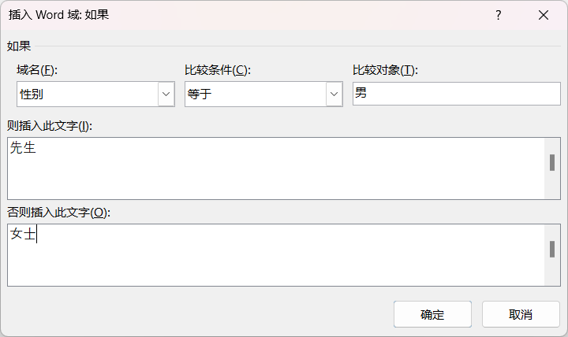
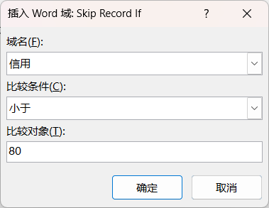
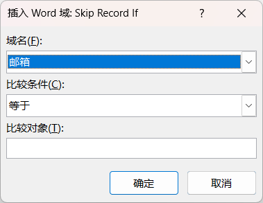
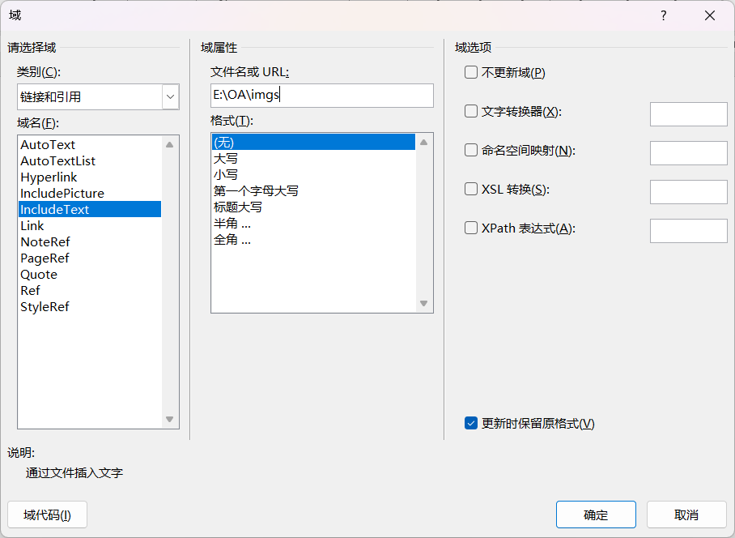
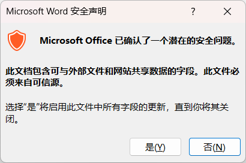

邮件
Mailings
- 内容 Contents
- 邮件
- 方法 Methods
- 示范 + 实操
邮件
- 说明
- . 综合使用"开始邮件合并"和"编写和插入域"完成邮件的批量编辑
- . 将一个Word文档与一个Excel数据源结合起来，快速生成一系列内容相同而收件人不同的输出文档的过程。相同的内容来自主文档，变化的内容来自数据源。
- . 利用"规则"对数据进行区别操作，如根据性别调整称呼；或者过滤掉某些数据：信用低于3000的客户不在邀请范围等等
-
 使用规则"如果...那么...否则"加入称呼 -
 使用规则"跳过记录条件"过滤掉信用小于80的记录 -
 使用规则"跳过记录条件"过滤掉信用为空的记录
高级使用 - 图片
- 说明
- . 需要配合文档部件中的域来实现，并使用绝对路径或相对路径拼接处完整的图片路径
- 环境介绍
-
准备图片：图片最好放在一个文件夹内准备数据源文件：Excel文件；仅仅给出图片的文字名，如gl.png，没有给出路径，需要后面修改域代码完成拼接准备邮件文件：Word文件，并编辑好文案
- 注意：以上文件位置不做要求，尽量放在一起
- 使用步骤
-
打开邮件文件，定位光标，插入"文档部件" → "域"，选择包含图片的域，并指定其路径；系统对外部的操作会给出警告信息，确认即可
 插入图片域  系统提示 按Alt + F9切换到域代码编辑状态，显示为：{INCLUDETEXT "E:\\OA\\imgs" \* MERGEFORMAT }将光标定位在路径最后面imgs处，切换回"邮件"，插入图片域，此时的图片对应的域代码为：{INCLUDETEXT "E:\\OA\\imgs\\{MERGEFIELD 头像}" \* MERGEFORMAT }按Alt + F9，退出域代码编辑状态，按F9刷新，检查图片的加载情况后续的完成合并同前；如果图片没有更新，请按F9保存 -
常见域的格式调整 格式 说明 示例 \# 0.00 指定小数位数 12→12.00 \# ￥####0.00 增加货币符号并指定宽度 2→￥ 2.00 \@ YYYY-MM-DD 数字显示 7/1/1995→1995-07-01 \@ EEEE年O月A日 中文显示 7/1/1995→一九九五七月一日